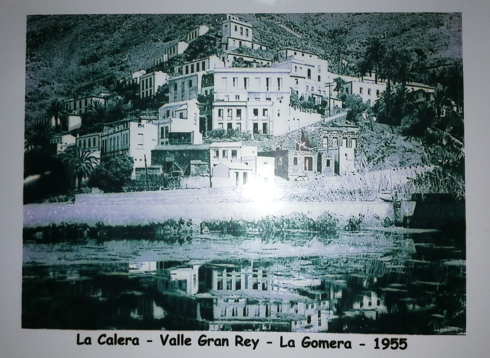
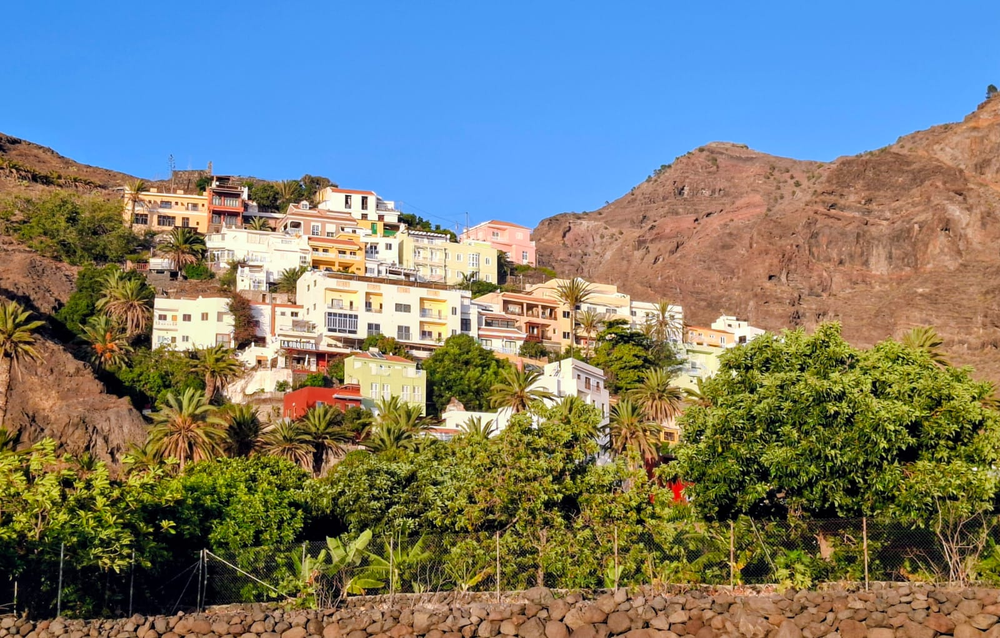

🪴 Cerámica
Nery
Artista ceramista con un estilo natural y sensible.
Ver su obra →La inspiración nace en Valle Gran Rey
Cada uno con lo suyo. Entra en su casita y mira lo que hace.
🪴 Cerámica
Artista ceramista con un estilo natural y sensible.
Ver su obra →🎊 Piñatas y filigranas
Artesana de piñatas, filigranas y bisutería.
Explorar →🪵 Madera
Creador: coches, juguetes de madera, portamóviles.
Explorar →La Calera, Valle Gran Rey, La Gomera. Ha cambiado de colores, pero sigue siendo nuestro lugar.


De una casa de La Calera salieron cinco ramas.
Aquí va la primera anécdota: un verano en el pueblo, una travesura, algo que siempre se cuenta en las reuniones.
Aquí va otra historia. Puede ser corta: una frase que haga reír a todos.
Y aquí otra más. Cuantas más anécdotas, más se parecerá la página a una tarde de familia.